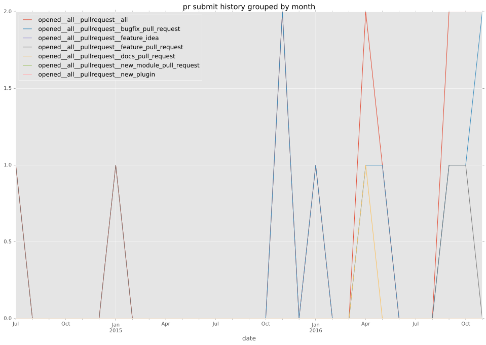
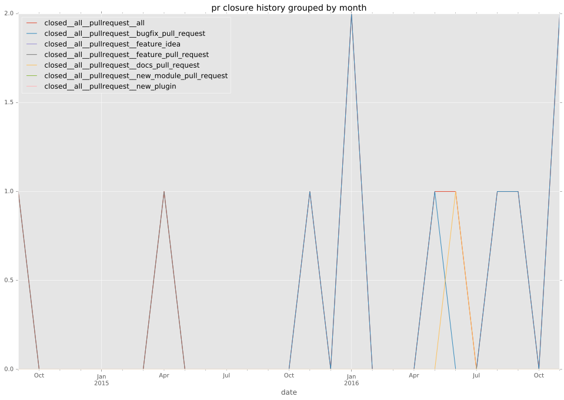

authors
- sgargan
maintainers
- sgargan
contributors
- sgargan : 43 commits
- irlevesque : 6 commits
- bcoca : 5 commits
- mscherer : 3 commits
- abadger : 2 commits
- resmo : 1 commits
- joelthompson : 1 commits
total issue counts
feature pull request: 4
docs report: 1
pullrequest: 12
docs pull request: 1
bugfix pull request: 6
feature idea: 3
issue: 9
new plugin: 1
bug report: 5
issue history
pullrequest history


days open by issue type
bugfix pull request
count: 9
std: 35.7735936132
min: 0
max: 108
median: 0.0
mean: 12.6666666667
all
count: 17
std: 42.0964403972
min: 0
max: 108
median: 3.0
mean: 31.8823529412
pullrequest
count: 0
std: nan
min: nan
max: nan
median: nan
mean: nan
docs pull request
count: 1
std: nan
min: 47
max: 47
median: 47.0
mean: 47.0
docs report
count: 0
std: nan
min: nan
max: nan
median: nan
mean: nan
feature pull request
count: 1
std: nan
min: 60
max: 60
median: 60.0
mean: 60.0
feature idea
count: 1
std: nan
min: 101
max: 101
median: 101.0
mean: 101.0
issue
count: 0
std: nan
min: nan
max: nan
median: nan
mean: nan
new plugin
count: 2
std: 0.0
min: 93
max: 93
median: 93.0
mean: 93.0
bug report
count: 3
std: 11.3724814062
min: 2
max: 24
median: 8.0
mean: 11.3333333333
closures grouped by total days open